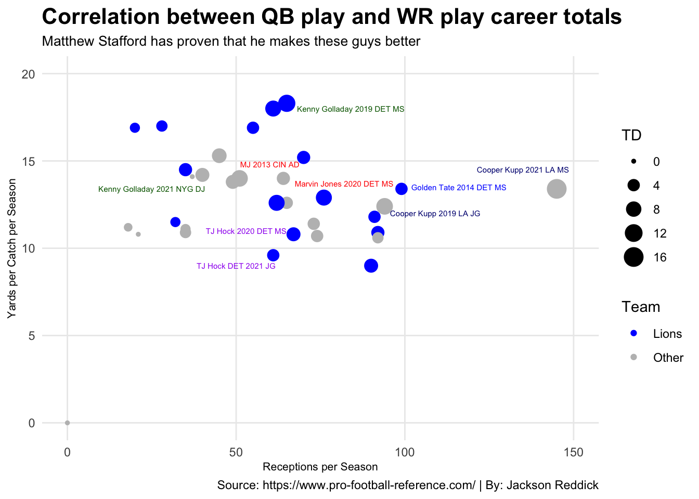
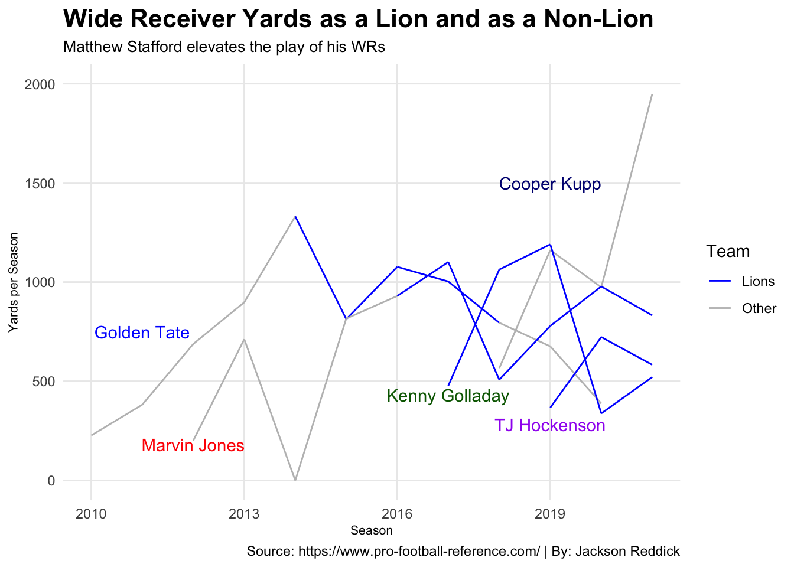
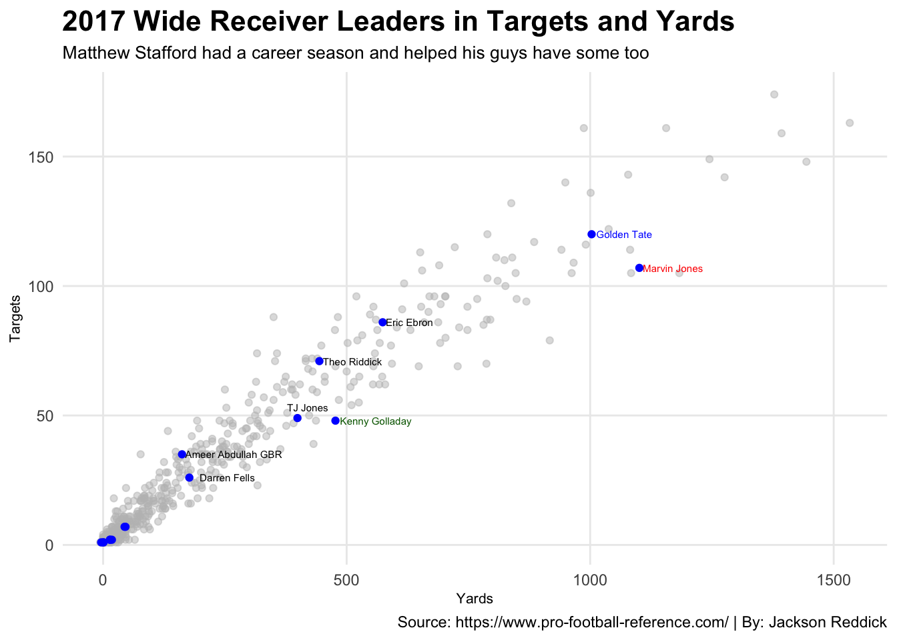

In 2021, the Detroit Lions decided to move on from the franchise quarterback Matthew Stafford. I still remember working my cashier job at Super Saver getting the notification on my Apple Watch and reality set in that the man who kept the Lions “relevant” was being traded. But I already knew how good Matthew Stafford was, and America found out when he led the Los Angeles Rams to the Super Bowl. And now the Lions have Jared Goff and are the same ole Lions, so yeah.
But as good as Matthew Stafford was for the Lions, he elevated the play of all his wide receivers. Yes he had Calvin Johnson for the majority of his Lions career, but I want to focus on ending of Calvin’s career and the post-Calvin years. Undoubtedly, Calvin Johnson is a top 5 WR in NFL history and I won’t debate that with anyone. But Matthew Stafford made the trio of Golden Tate, Marvin Jones and Kenny Golladay one of the best receiving cores in the NFL. Add in TJ Hockenson in 2020, subtracting Golden Tate, and the Lions had two good WRs and an above average receiving TE. Then when Matthew Stafford was traded to the Rams, he made Cooper Kupp the 2nd coming of Christ.
But how did their best years elsewhere compare to their best year with Matthew Stafford?
# A tibble: 8 × 6
# Groups: Team [2]
Team Player TotalTouchdowns TotalYards TotalReceptions TotalYardsPer…¹
<chr> <chr> <dbl> <dbl> <dbl> <dbl>
1 Lions GoldenTate 19 4224 372 11.3
2 Lions KennyGolladay 21 3068 183 16.8
3 Lions MarvinJones 36 4296 289 15.0
4 Lions TJHockenson 12 1673 160 10.6
5 Other CooperKupp 35 4648 371 12.6
6 Other GoldenTate 27 4054 323 12.4
7 Other KennyGolladay 0 521 37 14.1
8 Other MarvinJones 19 2561 207 9.84
# … with abbreviated variable name ¹TotalYardsPerRec
Code
gt <- allthosereceivers %>%filter(Player =="GoldenTate")mj <- allthosereceivers %>%filter(Player =="MarvinJones")tj <- allthosereceivers %>%filter(Player =="TJHockenson")ck <- allthosereceivers %>%filter(Player =="CooperKupp")kg <- allthosereceivers %>%filter(Player =="KennyGolladay")ggplot() +geom_point(data=allthosereceivers, aes(x=Rec, y=`Y/R`, size=TD, group=Player, color=Team)) +scale_color_manual(values=c("blue", "grey")) +geom_text(aes(x=135, y=14.5, label="Cooper Kupp 2021 LA MS"), size=2, color="navy") +geom_text(aes(x=109, y=12, label="Cooper Kupp 2019 LA JG"), size=2, color="navy") +geom_text(aes(x=116, y=13.5, label="Golden Tate 2014 DET MS"), size=2, color="blue") +geom_text(aes(x=84, y=18, label="Kenny Golladay 2019 DET MS"), size=2, color="dark green") +geom_text(aes(x=25, y=13.4, label="Kenny Golladay 2021 NYG DJ"), size=2, color="dark green") +geom_text(aes(x=82, y=13.7, label="Marvin Jones 2020 DET MS"), size=2, color="red") +geom_text(aes(x=60, y=14.8, label="MJ 2013 CIN AD"), size=2, color="red") +geom_text(aes(x=50, y=9, label="TJ Hock DET 2021 JG"), size=2, color="purple") +geom_text(aes(x=53, y=11, label="TJ Hock 2020 DET MS"), size=2, color="purple") +scale_y_continuous(limits =c(0, 20)) +scale_x_continuous(limits =c(0, 150)) +labs(x="Receptions per Season",y="Yards per Catch per Season",title="Correlation between QB play and WR play career totals",subtitle="Matthew Stafford has proven that he makes these guys better",caption="Source: https://www.pro-football-reference.com/ | By: Jackson Reddick" ) +theme_minimal() +theme(plot.title =element_text(size =16, face ="bold"),axis.title =element_text(size =8), plot.subtitle =element_text(size=10), panel.grid.minor =element_blank())

I find it so crazy how far Kenney Golladay fell off a complete map after leaving the graces of Matthew Stafford.
But so after looking at the total TD’s along with other stats, how do the career yards stack up against their times with the Lions and without the Lions?
Code
library(tidyverse)library(ggrepel)stats <-read_csv("MatthewStaffordStats.csv")allthosereceivers <- stats %>%mutate(Team =case_when(Tm =="DET"~"Lions", TRUE~"Other"))gt <- allthosereceivers %>%filter(Player =="GoldenTate")mj <- allthosereceivers %>%filter(Player =="MarvinJones")tj <- allthosereceivers %>%filter(Player =="TJHockenson")ck <- allthosereceivers %>%filter(Player =="CooperKupp")kg <- allthosereceivers %>%filter(Player =="KennyGolladay")ggplot() +geom_line(data=allthosereceivers, aes(x=Year, y=Yds, group=Player ,color=Team)) +scale_y_continuous(limits =c(0, 2000)) +scale_color_manual(values=c("blue", "grey")) +geom_text(aes(x=2011, y=750, label="Golden Tate"), color="blue") +geom_text(aes(x=2012, y=180, label="Marvin Jones"), color="red") +geom_text(aes(x=2019, y=280, label="TJ Hockenson"), color="purple") +geom_text(aes(x=2017, y=430, label="Kenny Golladay"), color="dark green") +geom_text(aes(x=2019, y=1500, label="Cooper Kupp"), color="navy") +labs(x="Season",y="Yards per Season",title="Wide Receiver Yards as a Lion and as a Non-Lion",subtitle="Matthew Stafford elevates the play of his WRs",caption="Source: https://www.pro-football-reference.com/ | By: Jackson Reddick" ) +theme_minimal() +theme(plot.title =element_text(size =16, face ="bold"),axis.title =element_text(size =8), plot.subtitle =element_text(size=10), panel.grid.minor =element_blank())

Players leveled out with Stafford, as guys like Marvin Jones and Golden Tate entered Detroit just past or going into the final stages of their respective primes. But Stafford effectively made Kenny Golladay $70+ million in New York, and once again the difference between Jared Goff and Matthew Stafford for Cooper Kupp sheeeeeeeeeeesh.
Lastly, I wanted to check out one of Stafford’s career seasons, which was 2017. If any of you in this room knows about the 2017 Detroit Lions like I do, please go get mental care. But to recap, it was Jim Caldwell’s final season in Detroit, the Atlanta Falcons snuck away with a 10-second runoff rule and the Lions went 9-7 and hired Matt Patricia the next season. Yeah. Sound familiar? You see why I hate the weekends in the fall?
In 2017 Stafford threw for 4446 yards, 29 TDs to only 10 INTs, averaging 12 yards per completion. Pretty damn good season for a quarterback wanting to will his team to the playoffs. But how good to his WR’s stats matchup to the whole league?
Code
library(tidyverse)library(ggrepel)stats <-read_csv("2017WRTotals.csv")bestwrs <- stats %>%group_by(Team, Player) %>%summarise(Yards=sum(Yds),Targets=sum(Tgt) )det <- bestwrs %>%filter(Team =="DET")ggplot() +geom_point(data=bestwrs, aes(x=Yards, y=Targets), color="grey", alpha=.5) +geom_point(data=det, aes(x=Yards, y=Targets), color="blue") +geom_text(aes(x=1070, y=120, label="Golden Tate"), size=2, color="blue") +geom_text(aes(x=1170, y=107, label="Marvin Jones"), size=2, color="red") +geom_text(aes(x=629, y=86, label="Eric Ebron"), size=2, color="black") +geom_text(aes(x=560, y=48, label="Kenny Golladay"), size=2, color="dark green") +geom_text(aes(x=512, y=71, label="Theo Riddick"), size=2, color="black") +geom_text(aes(x=420, y=53, label="TJ Jones"), size=2, color="black") +geom_text(aes(x=268, y=35, label="Ameer Abdullah GBR"), size=2, color="black") +geom_text(aes(x=255, y=26, label="Darren Fells"), size=2, color="black") +labs(x="Yards",y="Targets",title="2017 Wide Receiver Leaders in Targets and Yards",subtitle="Matthew Stafford had a career season and helped his guys have some too",caption="Source: https://www.pro-football-reference.com/ | By: Jackson Reddick" ) +theme_minimal() +theme(plot.title =element_text(size =16, face ="bold"),axis.title =element_text(size =8), plot.subtitle =element_text(size=10), panel.grid.minor =element_blank())

You can see there a couple dots I didn’t mark in the bottom left corner. In case you really want to know, Zach Zenner, the pride of South Dakota State and now a proud doctor, had 0 targets for 0 yards receiving.
In conclusion, Matthew Stafford is an awesome quarterback who deserves every ounce of respect that he has earned. He isn’t a HOF QB yet in my eyes, and now that he has won his SB, I would gladly like the Rams to suck so the Lions get another good 1st round draft pick. This is what we have to get excited about as Lions fans.